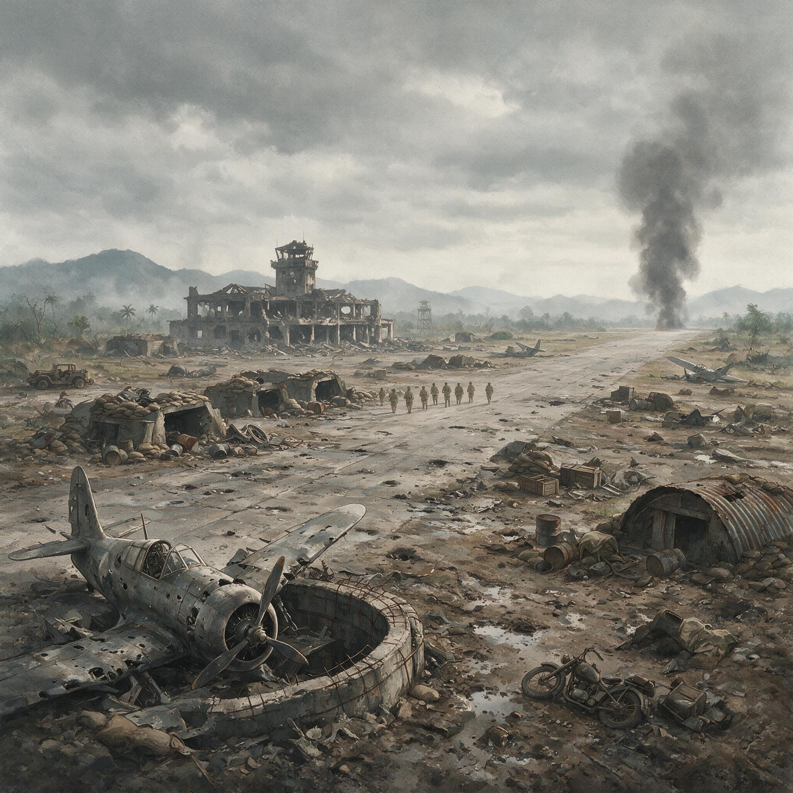

第 17 章
滇西会师：两线夹击的叙事
战车第一营从密支那南下的公路，是列多公路延伸出来的一段。路面由工兵在旱季刚刚拓宽，碎石和黄土还没有被彻底压实。坦克履带碾上去，车身往下一沉，再被发动机拽起来。

密支那战役中被炮火摧毁的机场
AI 生成插图，非史实影像。
十月以后的缅甸北部没有大雨，尘土从第一辆坦克开始，一直扬到队尾。士兵坐在坦克炮塔边或跟在车后，口鼻里都是灰。他们从密支那出发，前方的路标写着八莫、南坎、瑞丽江，再往东，是芒友。
这条公路本身就是武器。它把油料、弹药、口粮和替换兵员从印度方向源源不断地送过来，也把驻印军的进攻轴线固定下来。战车第一营的M3A3轻型坦克沿着这条路南下，工兵在前方修桥补路，后方有车队跟着。
地图上的箭头从密支那指向腊戍，中间要经过八莫、南坎，渡过瑞丽江，最后抵达滇缅边境的小镇芒友。那张地图后来被反复刊印，成为滇西缅北会师的示意图。图上两条粗线，一条从印度经密支那向东延伸，一条从怒江以东向西仰攻，最终在芒友汇合。地图画得干净利落。怒江东岸那条线，画出来容易，走起来是另一回事。
云南方向的中国远征军比缅北部队更早动手。1944年5月，驻印军正朝密支那推进时，第二十集团军已经在怒江东岸集结。
渡江命令在5月11日执行。雨季刚刚开始，江水上涨，但渡江本身还不是最困难的部分。部队用橡皮舟和木船在炮火掩护下过江，登上西岸。
真正的困难从江边开始。怒江西岸是高黎贡山的余脉，山势一道接一道，河谷深得看不见底。从江边到腾冲的直线距离不过几十公里，但部队要翻越的山脊没有一条是直的。山路窄到只能容单人通过，重武器上不去，骡马也上不去。
弹药要靠人背，伤兵要靠人抬。士兵背着步枪、子弹带、手榴弹和几天的口粮，在雨里往上爬。有人滑下山坡，就再也找不回来。
日军的工事修在山梁上，居高临下，火力点藏在树丛和岩石后面。远征军的炮火打不到，飞机受天气限制常常无法出动。步兵只能仰攻，一次一次地往上冲。
松山就卡在这条路上。松山不是一座孤立的山峰。它是滇缅公路的咽喉。日军从1942年占领以后就开始经营，把整个山地变成了堡垒群。
主阵地周围有数十个地堡，地堡之间以坑道相连，顶部覆盖着几层原木和土石，能抗住普通炮弹的直接命中。守备兵力不多，但火力配置严密。轻重机枪和掷弹筒构成交叉火网，正面几乎没有死角。
远征军第一次进攻时，以为用炮火覆盖之后步兵可以冲上去。炮火过后，日军从地下工事里钻出来，机枪一响，冲在前面的连队就成片倒下。那些工事不是临时挖的，它们是用了两年时间、依托山体岩石和粗大原木一层一层叠起来的。炮弹落在上面，只炸出一个浅坑。
松山之战从6月打到9月。远征军前后投入的部队轮换了好几批，伤亡数字不断累积。一个团上去，几天下来能继续战斗的人不到一半。有的连队打到只剩十几个人，仍然被命令继续攻击。
后来改变战法，不再从正面硬冲，而是从山脚往主峰下面挖地道，把炸药填进去，把子高地整个掀掉一块，才终于撕开一个口子。松山最终被攻下来了。守备的日军几乎全部阵亡。远征军付出的代价远高于对方。
具体数字在各种战史里有不同统计，但有一个事实没有争议：松山是滇西反攻中伤亡最集中的一役，也是中国军队在抗战中少有的、以数倍伤亡攻克坚固设防阵地的典型战例。如果把松山放在整个滇西反攻的时间表里看，它的位置就更加清楚。
远征军为什么必须在那个时间点强攻松山？因为滇缅公路必须尽快打通。而打通滇缅公路的时间压力，并不完全来自中国战场本身。
1944年下半年，美军在太平洋上的反攻已经推进到菲律宾一线。盟军需要中国战场继续牵住大量日军，以减轻太平洋方向的压力。中印公路和输油管道的贯通，被盟军视为提升中国战场作战能力的关键。
史迪威在缅北的推进，正是为了打通这条通道。滇西的远征军则被要求从东端配合，尽快清除公路沿线的日军据点。换句话说，滇西反攻的节奏，在很大程度上是由盟军全球战略的时间表决定的，而不是由中国军队自身的准备程度和消耗承受力决定的。这种压力通过指挥系统一层一层向下传导。
从盟军总部到重庆，从重庆到滇西前线，最后落在那些在泥泞和弹雨中向上爬的士兵身上。他们中的大多数人不知道菲律宾在哪里，也不知道太平洋上的跳岛进攻是什么。他们只知道前面的山头上有机枪，机枪后面有日本人，而他们必须上去。
上去的命令没有解释原因。松山的每一场冲锋背后，都有另一个战场的时间刻度在起作用。那个刻度不在怒江峡谷里，不在高黎贡山的雨雾中，而是在远得看不见的海面上。
腾冲和龙陵的战斗同样漫长。腾冲攻城战从夏天持续到秋天。城墙被炸开缺口后，步兵从缺口涌入，与日军展开巷战。城里的房屋多由火山石砌成，坚固异常。日军把每座房屋都变成了据点。
远征军没有足够的重炮，只能用炸药包和火焰喷射器逐一清除。火焰喷射器数量有限，很多时候士兵只能靠手榴弹和刺刀。龙陵位于滇缅公路要冲，日军在周围高地构筑了环形工事。
远征军多次攻入城区，又被日军反击逐出。战斗从6月打到11月，历经夏秋两季。滇西的钟表走得慢，每一格都卡在血里。1944年11月3日，龙陵被攻克。
20日，芒市被攻克。12月1日，遮放被攻克。到1945年1月19日，畹町终于被收复。这一串日期写进战报只是几行字，但每一行字后面都是一段一段用脚走出来的路。
龙陵的反复争夺尤其消耗兵员。远征军的补充兵源来自云南和四川的农村，许多新兵没有经过充分训练就被送上前线，在第一次冲锋中就倒下了。他们中有人第一次摸枪是在开往前线的路上，第一次开枪是在龙陵城外的山坡上。
这种消耗战的方式，与缅北战场形成鲜明对比。不是因为滇西的日军更强大，松山、腾冲、龙陵的守军同样顽强，但驻印军在缅北遇到的抵抗同样不弱。差别在于，驻印军进攻时可以得到相对充分的炮火准备和后勤保障，伤亡被控制在可承受的范围内。滇西远征军缺乏同样的火力支持和后勤补给，只能用人数去填平火力差距。
西线的战争节奏完全不同。1944年10月进入旱季后，战车第一营加入由密支那至腊戍的作战序列。坦克沿着列多公路向南推进，八莫是第一个大目标。日军在八莫外围构筑了工事，但驻印军的火力优势明显。
坦克可以抵近射击，步兵在炮火掩护下逐步推进。战斗仍然激烈，但节奏由进攻方掌握。八莫被攻克后，缴获的日军文件和物资清单显示，守备部队的补给已经相当困难，弹药和粮食所剩无几。
南坎在1945年1月15日被新一军攻克。瑞丽江横在南坎以南，江面不宽，但两岸地形复杂。战车第一营的坦克在工兵架设的浮桥上渡江，随后继续向芒友方向推进。
从密支那到芒友，驻印军的行军和作战始终保持着一种相对有序的节奏。伤亡虽然也有，但远低于滇西方向。
1月22日中午，第53军第116师与新一军一部在木遮相会。随后双方以钳形攻势向芒友推进。五天之后，两支军队在芒友正式会师。
从西边来的，是刚渡过瑞丽江的战车第一营和步兵；从东边来的，是第二十集团军和第十一集团军的部队。他们从怒江东岸一路打过来，翻过高黎贡山，穿过松山、腾冲、龙陵、畹町，脸上带着滇西山地留下的深重倦色。两支军队在镇外的空地上握手。摄影师拍下了那个场面。
照片后来流传很广，成为中印公路打通、滇西缅北会师的标志性画面。照片里，两边的士兵站在一起。
衣服的颜色和质地明显不同。一边是美式卡其布军装，钢盔和皮鞋齐全。另一边穿着土布军服，鞋子磨损得厉害，有的打着绑腿，有的光脚。
他们的脸上都有笑，但笑下面的东西不一样。驻印军士兵经过兰姆伽整训，体格相对健壮，面色虽然疲惫但仍有光泽。滇西士兵经历了连续数月的山地攻坚，面容消瘦，颧骨突出，眼睛深陷。
他们握手的时候，手上的老茧和伤口也不同。滇西士兵的手上有长时间攀爬山地留下的擦伤和冻裂，驻印军士兵的手上有握枪和操纵装备留下的茧子。这些差别没有被照片的文字说明记录下来。
照片只记录了“会师”这个事实，记录了中印公路打通这个战略成果。但照片本身比文字说明更诚实。它把两种中国军队并置在同一个画面里，让看到照片的人不能不注意那种突兀的差异。这种差异不是偶然的。它来自两条完全不同的补给链和指挥系统。
驻印军在兰姆伽接受了系统的训练，装备了美式武器，后勤由美方负责组织。口粮、弹药、医疗都有相对稳定的供应。作战范围虽然受公路修筑进度制约，但公路修到哪里，卡车和坦克就能开到哪里。
滇西远征军则在国内动员和补给体系下作战。武器混杂，弹药不足，口粮常常只能维持最低标准。伤员后送和医疗条件极差。许多伤员只能靠人力抬着在山路上走，有些人抬到半路就死在担架上。
同样的士兵，放在不同的体系里，打出了完全不同的战争。孙立人麾下的新一军士兵，和滇西远征军的士兵一样，都是中国农民出身的青年。很多人识字不多，但能吃苦，能服从，能在战场上做出超常的忍耐和牺牲。差别不在于人，而在于他们背后的体系。
史迪威、斯利姆以及日军战史丛书，在这一点上留下了不同文字，但判断指向同一处：中国士兵是世界优秀的步兵，缺的是现代化体系和公平后勤。这个评价在缅北和滇西两个战场上得到了最尖锐的印证。
缅北的中国士兵因为有了相对完整的后勤和火力支持，能够打出连续进攻，把日军从密支那一路压向南坎。滇西的中国士兵同样勇敢，同样能熬，但他们在怒江峡谷和雨季山路中，只能用更原始的物资条件作战，只能以数倍伤亡完成同样的任务。差别不在人，而在人所处的结构。
这种结构性的不对等，背后是中美两国在“打通中国”这一目标上截然不同的时间表和利益权重。对美国来说，中印公路的打通主要是为了提升中国战场的战略价值，使其能够继续牵制日军，配合美军在太平洋的作战。因此，美方关注的是公路何时能够贯通，物资何时能够运进中国。
对中国来说，滇西反攻当然也有打通国际通道的考虑，但更重要的是收复失地、恢复滇西领土完整。这两个目标在许多时候是一致的，但在节奏和方式上存在分歧。
美方倾向于要求中国军队尽快进攻，以配合盟军的整体战略。中方则担心过快推进会带来过大的伤亡，消耗本已捉襟见肘的兵员和物资。这种分歧在滇西反攻的决策过程中反复出现。
远征军司令长官卫立煌在指挥作战时，多次面临来自重庆和盟军方面的压力，要求加快进攻速度。他在松山和龙陵的攻坚中，不得不在伤亡和速度之间做出选择。最终，速度压倒了伤亡。滇西远征军以巨大的牺牲换来了公路的按时贯通。这个“按时”，是盟军战略时间表上的“按时”，而不是中国军队自身承受能力上的“按时”。
驻印军方面的作战节奏，同样受到盟军战略的影响，但影响的方式不同。史迪威在缅北的推进，从一开始就与列多公路的修筑紧密相连。公路修到哪里，部队就打到哪里。这种“修路—作战”一体化的模式，保证了驻印军的后勤补给线始终相对稳固。
但这也意味着驻印军的作战范围受到公路修筑进度的制约。旱季来临后，公路修筑速度加快，部队的推进速度也随之加快。八莫、南坎的攻克，都是在公路延伸的支持下完成的。
驻印军的士兵不需要像滇西远征军那样，在没有任何道路的山地里背着弹药和口粮行军。他们有卡车、坦克和工兵。这种后勤上的优势，直接转化为战场上的火力优势和机动优势。
当滇西远征军在松山用炸药包和刺刀一个地堡一个地堡地清除日军时，驻印军的坦克正在八莫外围的平地丘陵间轰击日军的工事。两种战争方式之间的对比，不仅仅是装备的对比，也是整个军事体系和工业基础之间的对比。
中国没有自己的坦克工业，没有足够的卡车和汽油，没有系统的军官训练体系。驻印军所拥有的这一切，都来自盟军的供应和训练。滇西远征军所缺乏的，正是这些来自体系的支持。
这不是哪一支部队的问题，也不是哪一个指挥官的问题。它是一个农业国在现代化战争中必然遇到的困境。当一部分部队被纳入盟军体系，获得了现代化训练和后勤支持时，另一部分部队仍然留在国内体制中，以更原始的物资条件进行着同样残酷的战争。两者都在为同一个国家作战，都在付出牺牲，但牺牲的方式和代价并不相同。
芒友会师之后，中印公路正式贯通。第一批运输车队从印度出发，经过密支那、八莫、南坎，到达芒友，再沿滇缅公路进入中国境内。车队载着汽油、弹药和军需物资。
中国在抗战爆发后失去了沿海港口，国际援助物资只能通过滇缅公路和驼峰航线运入。滇缅公路被切断后，中国几乎处于被封锁的状态。中印公路的打通，意味着中国重新获得了一条陆上国际通道。
这条通道的军事意义和经济意义都不容低估。但这条通道的打通，是用什么换来的？
从密支那到芒友，从怒江到龙陵，每一公里公路的下面，都埋着士兵的尸体。这些尸体的分布并不均匀。滇西段的密度远高于缅北段。松山一个山头，就埋下了数千具中国士兵的遗体。腾冲城内的巷战，把整座城变成了墓地。龙陵的反复争夺，让周围的每一道山梁都浸透了血。
这些牺牲在会师的庆典上被压缩成一个简单的数字。数字被报告上去，被写进战报，被后来的史书引用。
但数字背后的每一具尸体，都是一个具体的人。他们从四川、云南、贵州、湖南的农村被征召出来，穿上军装，扛起步枪，走过怒江，爬上松山，再也没有回来。他们的名字大多数没有被记录下来。他们在战后的统计中只是一个数字的一部分。
会师之后，驻印军继续南下，向贵街、新维、腊戍推进，直到1945年3月才结束缅北战事。滇西远征军则留在滇西进行休整和补充。两支军队在芒友的交叉是短暂的。
他们握手，欢呼，拍照，然后各自转身，回到自己的部队里。坦克继续向南开去，步兵继续向东留守。芒友又恢复了平静。
镇子外面的土路上，坦克辙印和人的脚印混杂在一起，很快被新的车辙和脚步覆盖。没有人在那里立一块碑，标明哪条路是坦克走的，哪条路是人走的。碑后来是有的，但上面只写了“会师”两个字，没有写别的。
那张照片留下来。它成了一种证明，也成了一种提醒。证明的是地理上的打通，提醒的是打通背后两种代价的不对等。
滇西远征军在完成滇西反攻后，部队疲惫不堪，兵员缺额严重。许多士兵在连续数月的山地作战中患上了疟疾、痢疾和营养不良。他们的身体状况在会师时已经接近极限。驻印军的情况相对较好，但同样面临着长期作战的疲劳。两支军队在会师时经历了短暂的喜悦，随后又各自走向不同的方向。
松山主阵地被攻克后，进入过子高地的人很少用“工事”这个词来形容它。那更像是一座被掏空的山。战后测量的记录显示，子高地核心工事顶部自上而下依次是两米厚的夯土、交叉叠放的圆木层、一层钢板、再一层碎石和原木，总厚度接近四米。山炮弹落在上面，只能崩开最外层的泥土，震得坑道内壁掉下碎屑。主堡的射击口并不大，只有半人高，从远处看像山坡上的一道黑影。日军射手在口子后面换弹、装填、瞄准，外面的视线很难捕捉。火力从这些口子里斜着交叉出来，把正面每一道可攀援的凹地都锁死。中国士兵从下往上冲时，最先看见的不是日本人，而是从岩缝和树根之间突然亮起的枪口焰。
这种工事不是为了坚守一个点，而是为了让进攻者在山体表面失去方向。子高地周围还有几个小地堡，有的藏在大石头后面，有的嵌在松树根部。地堡之间有坑道相连，坑道窄得只容一个人弯腰通过。日军不轻易离开工事，他们沿着坑道转移，从不同的射口露出来射击。一个连从午前向上运动，到午后还能开火的步枪已经不是体力问题，而是子弹、手榴弹和掩体角度问题。连队伤亡不是一次性倒下的，是一段一段、一个棱线一个棱线地积累起来的。有些士兵死在离射口只有十几米的地方，身边散落着没有投出去的手榴弹。他们不是没有接近，而是接近之后仍无法摧毁那层由原木和土石叠成的外壳。
这种战场条件下，火力准备本来应该由重炮完成。可是怒江东岸的山路不允许重炮快速跟进。
即便是已经渡江的炮兵，也只能把山炮拆解成部件，用骡马和人力往山上运。炮管由十六个人抬着，在雨后的泥路上走一天，可能只前进几公里。等到山顶架起炮位，炮弹又常常不够。一发炮弹从山下运到松山前线，要经过几道骡马站和人力接转，沿途的损耗和延误无法计算。
美军飞机的空袭给日军工事带来的破坏也有限。子高地顶部的大部分工事在轰炸后仍然能抵抗步兵冲击。
真正摧毁它的，不是哪一门炮，而是中国工兵从山脚开始一寸一寸挖进去的坑道。那条坑道里没有机械化设备，只有圆锹、手镐和成筐的泥土。人伏在坑道里，膝盖和肘部贴着土壁，把炸药一点一点运到主堡下方。爆炸掀掉子高地的一角之后，步兵才第一次站上了那片被削平的山顶。
同样在1944年10月以后的旱季，西边的八莫是另一张地图。驻印军的坦克在镇外抵近射击时，日军的火力点并没有松山子高地那样深埋在山体里的顶盖。八莫周围是河谷和低矮丘陵，日军的工事多利用木头和沙袋，缺乏整两年的山体经营。坦克炮可以直接打在火力点正面的射孔附近，步兵跟在坦克后面前进，不必从完全暴露的山坡上由下向上冲锋。战斗仍然持续了不少日子，但攻方的伤亡主要集中在步兵清除房屋和壕沟时的近距离交火，而不是长时间暴露在交叉火力下的仰攻。
战后在八莫残存仓库里发现的，不是成堆的弹药，而是空油桶、发霉的米袋和一些拆散的枪械零件。日军留守人员烧掉了一部分文件，剩下的物资清单写得很潦草。清单上粮食一项已经出现“代用食”的字样，掷弹筒弹也用红笔标注了“每一发都需计数”。
这说明八莫的日军并非不想持久，而是补给线已被切断。驻印军则相反，后方的车队在坦克开进前就运到了油料、口粮和医疗品。进攻的节奏可以等，也可以不等，因为补给允许他们选择。
从八莫转向南坎，再到瑞丽江边，公路和浮桥让坦克营没有离开硬地太久。渡江的时候，工兵在前一天夜里把浮桥分段推入水中，天明时坦克先上桥，步兵后跟。
瑞丽江的江水从上游带下来泥沙，拍在浮桥两侧。有人站在桥头，把坦克开上对岸时溅起的水花看成是缅北旱季少见的雨。
江对岸的地势比东岸更难走，但仍有可通车的土路。到芒友之前，部队的行军主要靠车轮和卡车厢，而不是靠人的肩膀。
滇西远征军从龙陵到畹町这一段，路虽已是公路，但路面上的坑洼和弹坑还没有填平。士兵成纵队沿着路肩走，重武器仍要靠畜力和人推。两支部队往同一个坐标靠近，一边的发动机声传到山坡上，另一边的脚步声几乎没有声响。
1月27日清晨，芒友镇外的薄雾还没有散。滇西来的部队从东边的山包上下来，队形已经拉长。
走在前面的人看见了停在路边的坦克和坦克旁边的士兵。那些士兵站在车旁，戴着钢盔，穿着整齐的卡其布军装。滇西士兵继续往镇口走，没有人喊口令，脚步比风声更碎。
双方接近时，一个驻印军士兵先伸出手。滇西士兵的手从绑腿旁抬起来，指关节因为长期抓握山石和枪背带而显得肿大。两只手握在一起，那一瞬间没有谁说话。滇西士兵的眼睛深陷，嘴唇干裂，脸上带着一种笑，但更像是因为突然停下脚步而不知道把表情放在哪里。
驻印军士兵的脸上也有笑，笑容里带着连续行军的油汗，颧骨下方仍有肉。另一个滇西士兵接过水壶，没有立即喝，只是把壶口举到鼻尖，像在确认那是水还是尘土。
这一动作没有进入后来的正式照片。摄影师拍下的，是两人握手的正面，背景里坦克炮管斜出，远处东边的山脊线上还有未散的雾。照片把胜利框了进去，也把两种不同的疲惫框了进去。
不用说明，那两种疲惫的质地不一样：一种已经透出稳定的给养和相对有节奏的作战带来的倦意，另一种则是长时间在半饥饿、睡眠剥夺和山地仰攻中磨出来的枯竭。它们同属于胜利，但不像同一种胜利。
问题没有被公开提出：同样是中国的士兵，为什么一支必须用数倍的伤亡才能完成同样的任务？这个问题在当时被胜利的欢呼声盖住了。但它没有消失。
它潜伏在照片的细节里，潜伏在伤亡数字的对比里，潜伏在那些衣衫褴褛的滇西士兵和装备整齐的驻印军士兵握手的瞬间。它会在后来的岁月里反复浮现，成为胜利的暗面。
从密支那到芒友，从怒江到龙陵，这两条战线在1944年到1945年初的几个月里完成了一次地理上的合拢。这次合拢被赋予了重大的战略意义，它确实也改变了中国战场的物资供应状况。但合拢的过程所揭示出来的东西，比合拢本身更加复杂。
滇西反攻和缅北反攻，表面上是一次协同作战，实际上是在两套不同的指挥系统、两条不同的补给链、两种不同的战争逻辑下各自展开的。它们最终在芒友碰头，不是因为两套系统实现了真正的整合，而是因为两条战线在地理上走到了同一个点。这个点的意义是真实的，但它所掩盖的差异同样是真实的。那些差异不会因为会师而消失。
它们会继续存在，继续影响这两支军队的命运，继续在中国的战争史上留下痕迹。当胜利的欢呼声在芒友散去之后，这些差异就会从照片的细节里浮现出来，从伤亡数字的对比里浮现出来，从那些没有名字的士兵的沉默里浮现出来。它们构成了“胜利”这个词下面最沉重的部分。